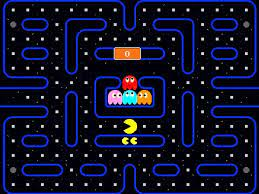
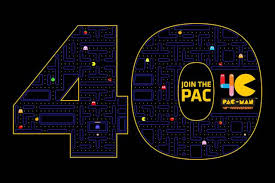
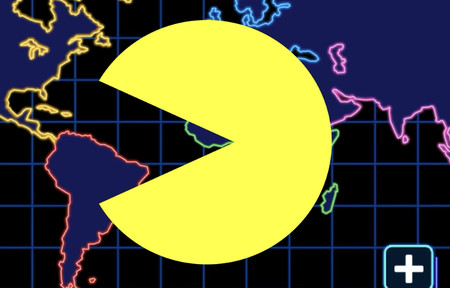

Pacman es un videojuego arcade creado por el diseñador de videojuegos Toru Iwatani de la empresa Namco, y distribuido por Midway Games al mercado estadounidense a principios de los años 1980.
Desde que Pac-Man fue lanzado el 22 de mayo de 1980,3 fue un éxito. Se convirtió en un fenómeno mundial en la industria de los videojuegos, llegó a tener el récord Guiness del videojuego de arcade más exitoso de todos los tiempos con un total de 293 822 máquinas vendidas desde 1981 hasta 1987 y acabó con el dominio de Space Invaders, donde la acción predominante era shoot 'em up (disparar a todos) para reemplazarla por un formato único, más humorístico y poco violento que gustó a muchísimas personas.

Jugabilidad
El videojuego tiene exactamente 255 pantallas completamente jugables, siendo este el mayor número que se puede expresar con ocho cifras en el sistema binario. Aunque, técnicamente, existe un nivel 256, si se llega a él la parte derecha de la pantalla aparece distorsionada con caracteres incongruentes y haciendo que el juego sea prácticamente injugable. Esto ocurre porque el contador de nivel (almacenado en un byte único) llega a 256 (cuando el máximo almacenable en un byte es 255, lo que produce un error de «overflow»). Entonces el programa trata de dibujar 256 frutas, lo que provoca la citada distorsión de la mitad derecha de la pantalla. Los entusiastas de Pac-Man se refieren a este nivel como el «nivel final», el «nivel de la pantalla dividida» (Split-Screen Level) o sencillamente como el final de Pac-Man. También en 2015, ha salido un juego llamado Pac-Man 256 que hace referencia a esto, el cual es un laberinto sin fin.

"El protagonista del videojuego Pac-Man es un círculo amarillo al que le falta un sector, por lo que parece tener boca. Aparece en laberintos donde debe comer puntos pequeños (llamados «Pac-dots» en inglés), puntos mayores y otros premios con forma de frutas y otros objetos. El objetivo del personaje es comer todos los puntos de la pantalla, momento en el que se pasa al siguiente nivel o pantalla. Sin embargo, cuatro fantasmas o monstruos, Shadow (Blinky), Speedy (Pinky), Bashful (Inky) y Pokey (Clyde), recorren el laberinto para intentar capturar a Pac-Man. Estos fantasmas son, respectivamente, de colores rojo, rosa, cian y naranja. En el juego original (Puck-Man), los fantasmas se llamaban Akabei, Pinky, Aosuke y Guzuta. Los fantasmas no son iguales, así mientras Blinky es muy rápido, y tiene la habilidad de encontrar a Pac-Man en el escenario, Inky es muy lento y muchas veces evitará el encuentro con Pac-Man.
Inicialmente, los enemigos de Pac-Man eran referidos como monstruos en el mundo arcade, pero pronto se convirtieron en fantasmas mayormente de diferentes colores. Los fantasmas no son capaces de mover a la dirección opuesta de su movimiento actual
Los fantasmas están limitados por el laberinto de la misma manera que Pac-Man, pero por lo general se mueven ligeramente más rápido que el jugador, aunque se vuelven más lentos cuando se activan los puntos especiales de las esquinas y se ralentizan significativamente al pasar a través de los túneles a los lados del laberinto (mientras que Pac-Man pasa a través de estos túneles sin trabas). Pac-Man se ralentiza ligeramente mientras come puntos, permitiendo potencialmente a un fantasma perseguidor que le capture durante esos momentos.